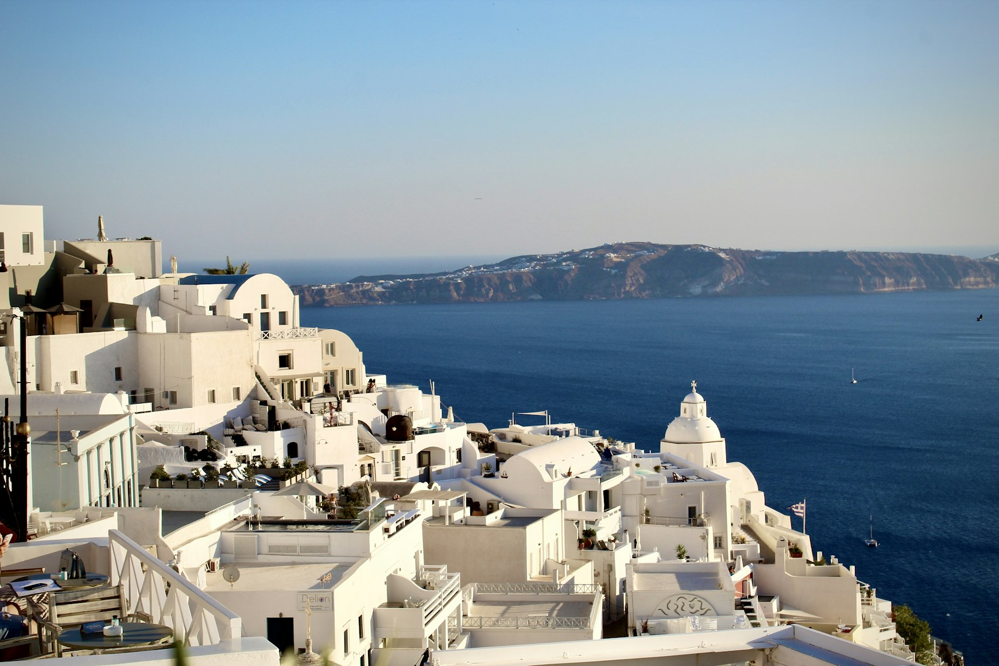
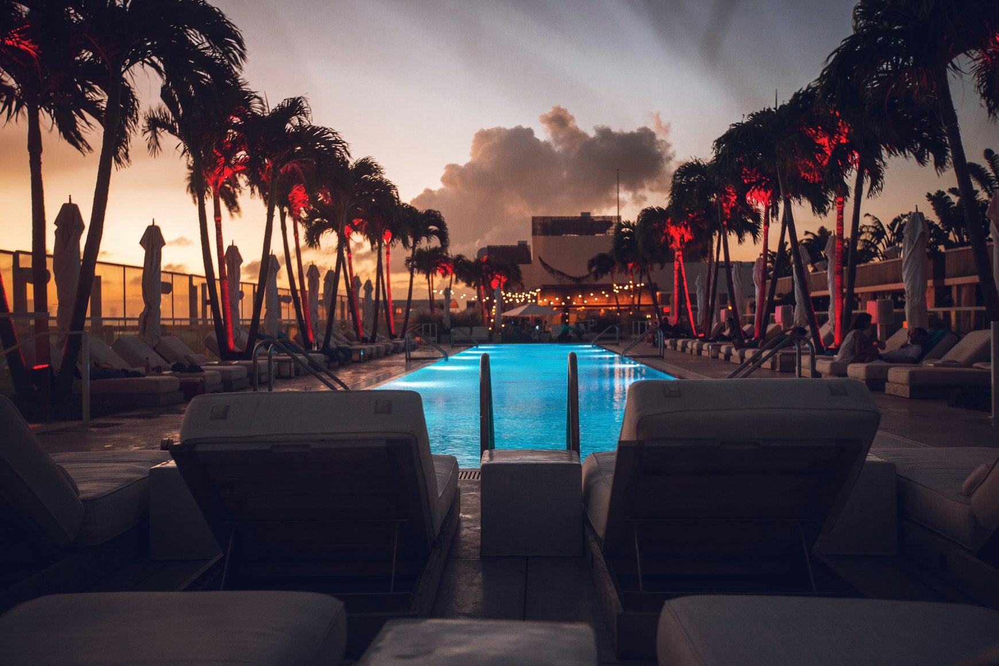
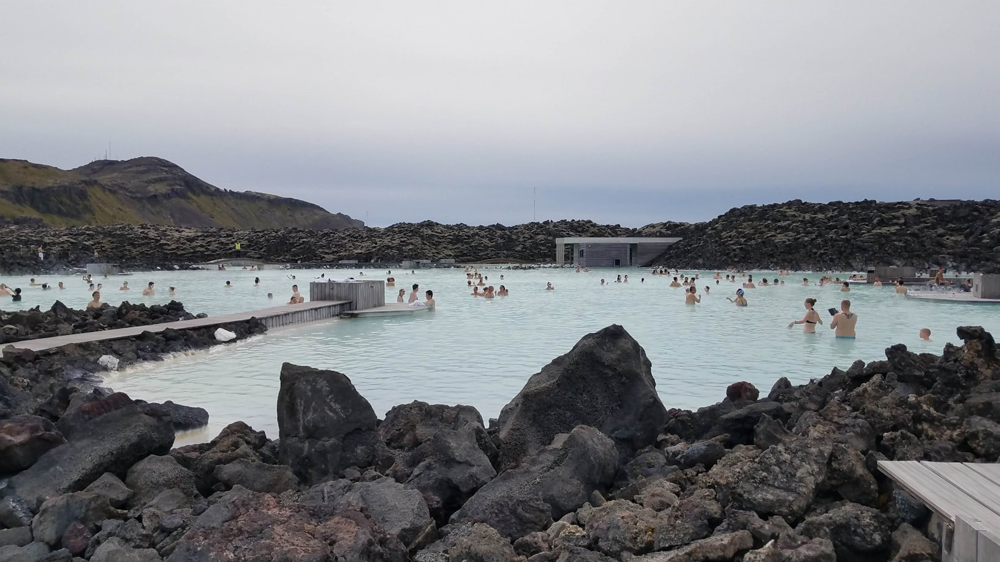
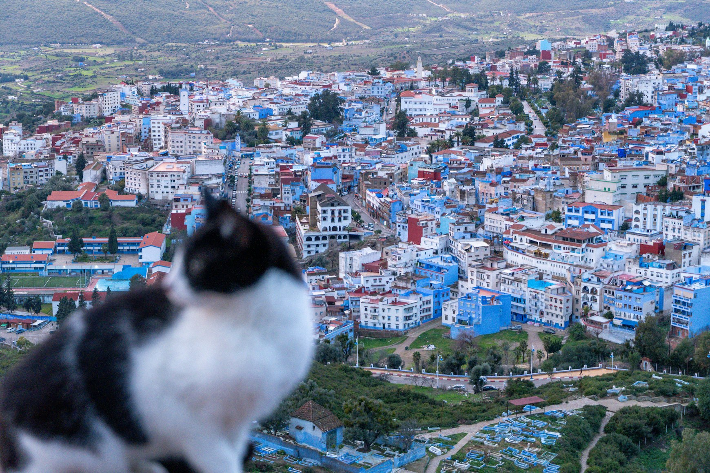

Some places are built perfectly for images.
A cliff edge at sunset. A narrow blue alleyway. A floating breakfast tray above an infinity pool. A road disappearing into volcanic fog.
Online, these places often feel cinematic, empty, almost emotionally transformative.
Then you arrive.
And reality turns out to be louder, hotter, more crowded, more commercialized, and far more physically exhausting — or simply much smaller than the image suggested.
That does not necessarily make these destinations bad.
But some places today function better as photographs than as lived experiences.
Tourism increasingly compresses entire destinations into a few visual angles. The internet removes waiting lines, noise, traffic, humidity, souvenir stalls, loud music, construction, exhausting heat, and the strange emotional emptiness that appears once thousands of people begin chasing the exact same image.
Some places still remain beautiful in person.
But beauty alone is not always enough to preserve atmosphere.
Santorini and the Island Built Around Sunset
Santorini still photographs almost impossibly well.
White buildings spill down volcanic cliffs. The Aegean turns silver in the evening light. Hotel terraces seem suspended above the sea.

But much of the island now operates around synchronized tourism movement.
Cruise ships unload thousands of people at once. The narrow streets of Oia slow into human traffic jams before sunset. Restaurants fill hours in advance. Visitors queue for the exact photo locations they already saw online long before arriving.
Gradually, the island begins feeling less like a place people inhabit and more like a landscape people consume visually.
The strangest part is that many travelers still leave with beautiful photographs.
Even when the actual experience itself felt physically exhausting.
Bali and the Performance of Nature
Parts of Bali increasingly feel designed not around atmosphere, but around documenting yourself inside it.
Rice terraces that once existed primarily as agricultural landscapes are now filled with viewing platforms, dress rentals, decorative nests, café installations, and queues for photographs.

Some jungle swings now require lines longer than airport security.
And while the photographs often look calm and meditative, the physical experience itself can feel surprisingly mechanical: pose, wait, leave.
The landscape remains beautiful.
But the relationship between people and the landscape has changed.
In many heavily photographed parts of Bali, visitors no longer experience nature directly.
They experience themselves being photographed inside it.
The Blue Lagoon and the Spa Version of Iceland
Blue Lagoon still looks visually extraordinary.
Black volcanic rock. White steam. Milky blue geothermal water disappearing into fog.

Photographs suggest raw Nordic isolation.
But physically, the experience often feels closer to highly efficient spa infrastructure: locker systems, reservation slots, crowded bathing areas, gift shops, cocktail bars inside the water itself.
None of this makes the Blue Lagoon fake.
But it does create a noticeable disconnect between the image people imagine and the atmosphere they actually encounter.
The photograph promises volcanic solitude.
The reality feels far more organized.
Chefchaouen and Cities Reduced to Color Palettes
The blue streets of Chefchaouen spread across social media so aggressively that many travelers arrive already knowing exactly what the city is supposed to look like.
And visually, the medina still delivers.
Blue staircases. Blue walls. Blue alleyways beneath mountain light.

But after several hours, some visitors begin experiencing a strange feeling of emotional repetition.
Because the internet has gradually compressed the city into a single visual concept: “the blue city.”
The problem is not the city itself.
The problem is that many travelers stop seeing anything beyond the color palette.
Entire destinations slowly become reduced to one aesthetic identity with little room left for surprise, contradiction, or discovery.
Places Become Smaller Once They Have Been Fully Explained
Part of the disappointment people feel in heavily photographed destinations comes from overfamiliarity.
By the time many travelers arrive, they have already consumed the place hundreds of times through reels, drone footage, cinematic edits, influencer content, and algorithmically optimized travel videos.
Very little remains visually unknown.
And places begin feeling emotionally smaller once surprise disappears.
The internet is extremely good at turning destinations into images.
It is much worse at communicating: temperature, fatigue, noise, smell, crowd movement, waiting, physical scale, or the emotional texture of spending several real hours somewhere.
That is why some locations still work perfectly as photographs while increasingly struggling as lived experiences.
The image survives.
The atmosphere does not always survive with it.
And perhaps that is becoming one of the defining contradictions of modern travel itself.